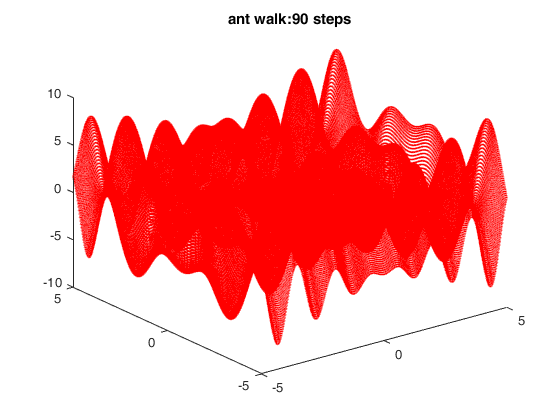

clear all; clc; close all;
x=-5:0.02:5;
y=-5:0.02:5;
[X,Y]=meshgrid(x,y);
Z=fcn1(X,Y);
figure;
plot3(X,Y,Z,'r.','MarkerSize',1); hold on
ant=[0,0,fcn1(0,0)];
h= plot3(ant(1),ant(2),ant(3),'b.','MarkerSize',18);
i=0;
title(['ant walk:', num2str(i), ' steps']);
v=inf; p=-inf;
for i=1:90
title(['ant walk:', num2str(i), ' steps']);
antx=(rand(1,1)-0.5)*10;
anty=(rand(1,1)-0.5)*10;
antz=fcn1(antx,anty);
if antz<v
v=antz
end
if antz>p
p=antz
end
set(h,'XData', antx);
set(h,'YData', anty);
set(h,'ZData', antz);
drawnow
pause(1);
end
v =
-0.5380
p =
-0.5380
p =
1.6161
p =
1.7182
p =
1.7436
v =
-1.6198
v =
-3.2868
p =
1.7733
p =
4.2460
v =
-3.3242
p =
4.5750
p =
5.9713
v =
-5.8164
p =
7.9534
v =
-6.8009
